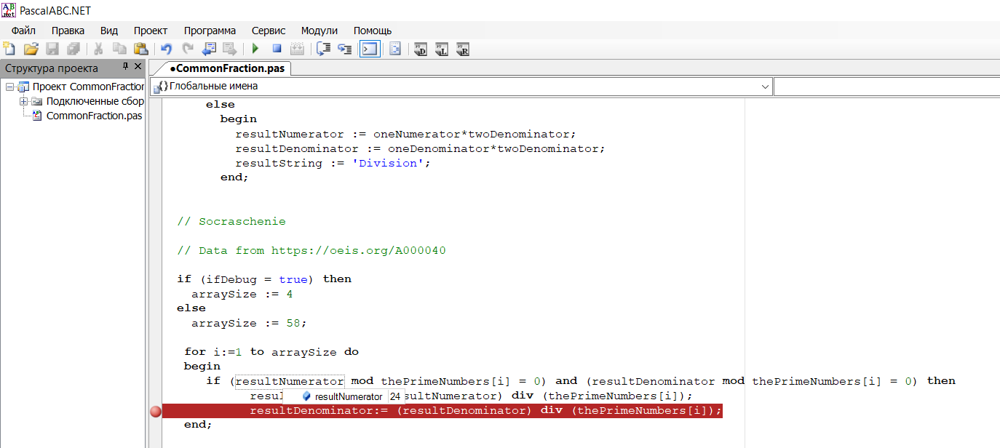

1. Обдумать и законспектирвоать
2. Java
Задача с дробями
(1 2/5 + 3/7) / (3 - 3/(10+6)) - Инфиксния запись
Для работы нашей программы мы должны написать парсер,
чтобы развернуть наше выражение в последовательност действий.
Результат: дробь1*дробь2 + дробь3 ...
Обратная польская нотация
3 6 + 8 /
Если бы нам предоставили не в инфиксной записи, а в обратной полькой ноцации (ОПН), нам бы подошла структура текущей программы
Todo?
Todo. Не для дробей, а для чисел реализовать алгоритм по преобразованию см. выше.
3 + 4 * 2 / (1 - 5)^2
3 1/2 + 4 * 2 / (1 - 5)^2
Дробь
- Числитель
- Знаменатель
- Целая часть
- Знак
Даже когда мы получили дроби в ОПН, нам нужно их как-то записать.
Два способа
- 4 массива
- Хранить в строке определенного формата
"-11 2/7" - сериализованый вид
readln(знаменатель вторй дроби) := текущаяДробь.знаменатель
флаконСЛаком
Свойства
- фирма-изготовитель
- цвет
- вязкость
- гель/не гель
- время высыхания
- запах
- объемФлакона
- текущийOстаток
Методы:
изменитьОстаток(объемИзменени)
изменитьЦвет
function изменитьЦует(объемИзменени) {
если объемИзменени положительный и текущийOстаток + объемИзменени > объем флакона2
выдать ошибку - оverflow
текущийOстаток = текущийOстаток + объемИзменени
}
мы создаем объекты класса
флакон1.цвет = синий
флакон1.время = 1ч
флакона2.цвет = красный
фвлакон2.веремя = 2ч
!!! массивФлаконов[3].цвет = зеленый
!!!!!!!!
текущийФлакон = массивФлаконов[4]
текцщийФлакон.цвет = желный
пилочка
класс
'красный/средняя/да/40'
лак.цвет
мойТекущий лак
текущийЧислитель = массивЧислитеплей[i];
Массив занимает всю выделенную под него память
На главную
Три основные шага в написании программы
- Написать исходный текст программы. Для Pascal это файл с расширением .pas
- Скомпилировать исходный текст программы в машинный код при помощи компилятора
- Запустить программу на выполнение
Как запуститть компилятор Pascal ABC в командной строке
- Зайти в нужную папку в командной строке. Например:
C:\Users>cd "C:\Program Files (x86)\PascalABC.NET"
- Скопировать имя программы с расширением! Обязательно указать какой компилятор мы используем(в данном случае это pabcnetc)!
(зайти в папку с файлом, в адресной строке
поставить курсор и нажать правой кнопкой мыши
одновременно с клавишей Shift, появится расширенное контекстное меню, выбрать "копировать как путь" и вставить в командную строку,
просто щелкнув правой кнопкой мыши). Примерно так:
C:\Program Files (x86)\PascalABC.NET>pabcnetc hello.pas
- Запустить прогрaмму. Примерно так:
C:\Program Files (x86)\PascalABC.NET>hello
Hello World by pascal
- cd "C:\Program Files (x86)\PascalABC.NET\
сюда же скопировать hello.pas
- Компиляция: pabcnetc hello.pas
- просто запустить hello.exe (можно без exe) на выполнение
Если в операторе If не один, а несколько операций их нужно заключить в
зарезервированные слова begin end; , иначе работать будет только первая
операция!!!
Даже если в операторе If одна операция, её все равно следует заключить в
зарезервированные слова begin end;. Если кто-то добавит ещё одну операцию, то
приоритет выполнения операций изменится и программа будет работать неправильно!!!

Переменная Val в Pascal
Как работает переменная Val
Школьная программа
Содержание
- Команда присваивания - стр. 69
- Работа с переменными целого типа - стр. 72
- Работа с переменными вещественного типа - стр. 74
- Составление линейных программ для решения задач - стр. 80
Приложения
- Зарезервированные (ключевые слова Pascal) - стр.150
- Сообщения об ошибке при работе в системе Pascal ABC - стр.152
- Работа с графическим окном - стр.153
Содержание
- Алгоритмическая конструкция Ветвление - стр. 5
- Простые условия - стр. 6
- Составные условия - стр. 8
- Полная и сокращенная формы условного оператора - стр. 10
- Алгоритмическая конструкция Повторение - стр. 25
- Оператор цикла с предусловием - стр. 34
Полезных приложений нет
Содержание
- Массив - стр. 21
- Арифметические действия с элементами массива - стр. 33
- Поиск элементов с заданными свойствами - стр.45
Приложения
- Кодовая таблица символов - стр. 182
Содержание
- Процедуры и функции Char - стр.28
- Процедуры и функции String - стр.36
- Преобразование типов данных - стр. 40
Приложения
- Кодовая таблица символов ASCII (32-127) - стр. 140
- Стандартные процедуры и символы - стр. 143
- Стандартные процедуры и функции для работы со строками - стр. 145
Приложения
- Структура HTML-документа,цвет, фон, структура страницы, форматирование текста - стр. 144
- Названия и шестнадцатиричные коды цветов - стр. 147
- Константы стандартных цветов.Действия с пером и кистью, действия с изображениями - стр. 149